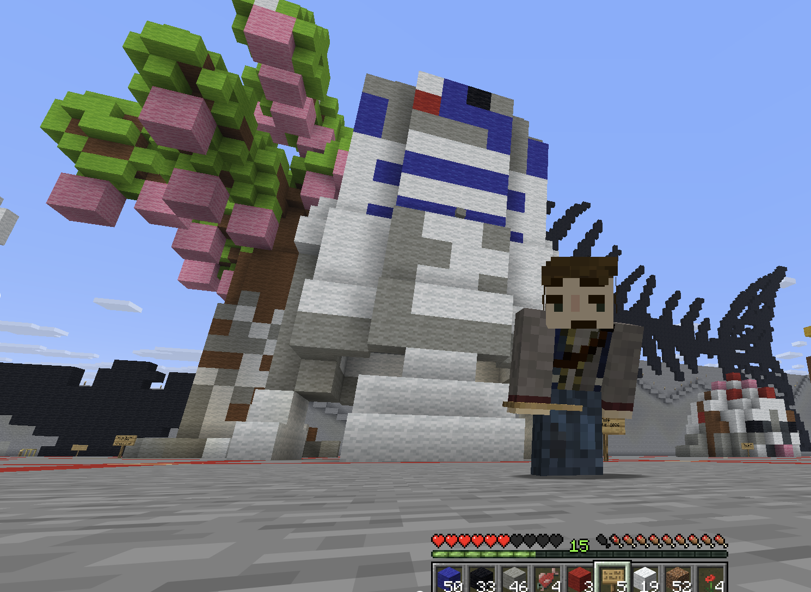
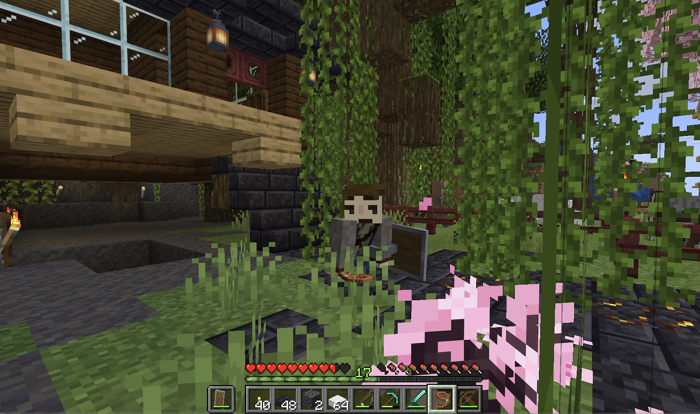

For the first time this year i bought and played Minecraft. I now have probably spent upwards of fifty hours on the game. this class was what pushed me to get it. for the main project the 3d printing i made r2d2 partly because he is a recognizable shape and partly because r2d2 is one of the most iconic star-wars characters. The second image is just my base on my friends realm. i used to much bone meal and now my house is both abandoned and over grown.